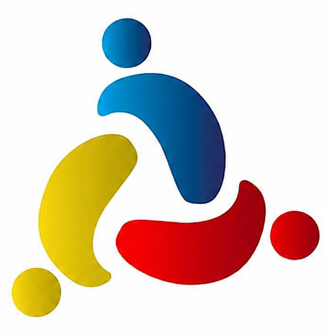

Bienvenido a nuestra iglesia
Miércoles Nivel 1: 7:30 PM
Sábados Nivel 3: 7:00 PM

Encuentra un Grupo de Conexión cerca de ti. Todos los jueves a las 19:30 horas en cuatros puntos de la ciudad.
Domingo: 18:30 PM